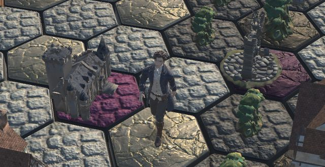
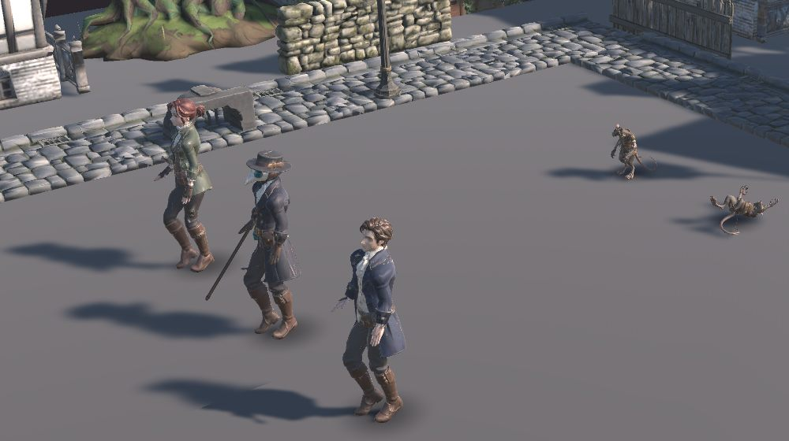
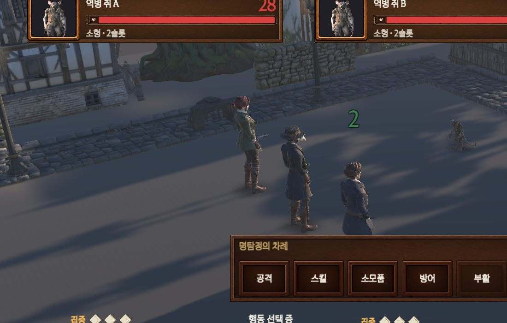
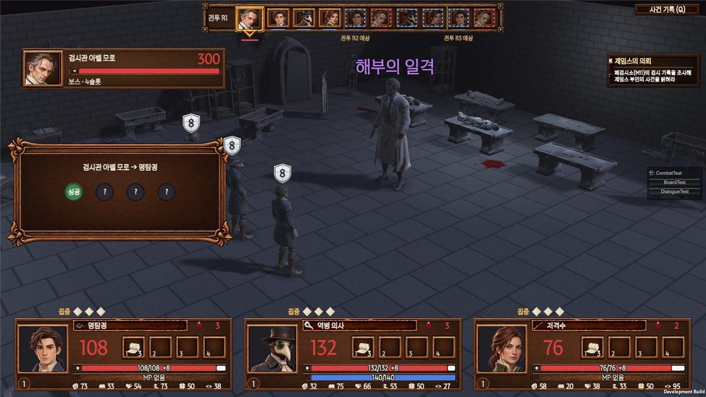
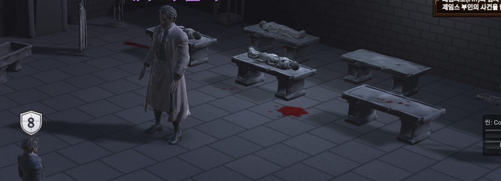
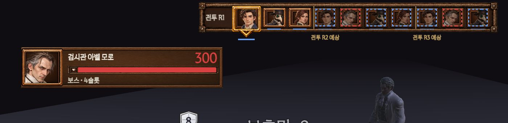
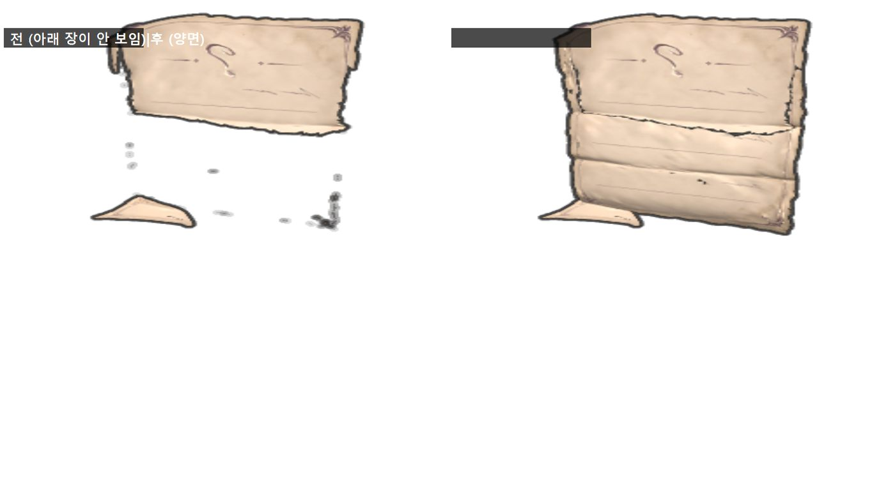

기획 추가 공유: 11/12 검수자료 뒤에 바뀐 것
2026-11-13 · 개발 최동환 → 기획 · 11/15 검수 때 같이 봐 주세요
어제 보낸 요청서(Q1~Q6)와 검수자료(R1~R21)는 그대로예요. 이 문서는 그 뒤에 새로 바뀐 것만 모았어요.
빨간 카드 3개는 기획 의견이 필요해요. 초록 카드는 알려 드리는 것이라 보고 OK만 해 주세요.
한눈에 보기
| 번호 | 무엇 | 필요한 것 |
|---|
| A1 | 걷기 모션 넣음 (보드 이동 · 전투 퇴각) | 의견 필요 |
| A2 | 손에 무기 들기 · 장착 무기에 따라 바뀜 | 의견 필요 |
| A3 | 아벨 보스전 배경 "폐검시소" + 핏자국 | 의견 필요 |
| B1 | 아군 초상화 · 아벨 얼굴 새 그림 | 확인만 |
| B2 | 효과음 빠진 곳 채움 | 확인만 |
| B3 | 마리의 집문서 아이콘 고침 | 확인만 |
의견이 필요한 것
A1걷기 모션을 넣었어요

보드: 칸을 옮길 때 걸어감

전투 퇴각: 돌아서서 걸어 나감
- 보드: 말이 칸을 옮기는 동안만 걸어요. 멈추면 서 있어요.
- 전투 퇴각: 돌아서서 걸어 나간 뒤 사라져요. 걸음이 보이게 0.5초 → 0.8초로 늘렸어요.
- 왜: 디자인이 걷기를 미리 보내 줬어요. 미끄러지던 말보다 자연스러워서 팀장 판단으로 넣었어요.
❓ 예전 기획 결정 "1막은 서 있는 자세로 이동"(3-2 A)과 달라요. 걷기로 바꿔도 될까요?
☐ 걷기 OK ☐ 예전처럼 서서 이동 (개발이 바로 끌 수 있어요) ☐ 퇴각만 걷기
A2캐릭터가 손에 무기를 들어요

전투 화면: 저격수 권총 · 명탐정 단검
| 누구 | 처음 든 것 | 바뀌는 것 (장착하면) |
|---|
| 명탐정 | 단검 | 검·대검 → 빈손 (모델 없음) |
| 역병 의사 | 지팡이 | 마법서 |
| 저격수 | 권총 | 장총 · 활은 빈손 |
| 아벨 모로 | 메스 · 수은병 | (적이라 그대로) |
- 규칙: 장착한 무기의 종류로 모양이 정해져요. 같은 종류면 이름이 달라도 같은 모양이에요.
- 지금 상태: 손가락이 펴져 있어서 무기가 손에 떠 보여요. 디자인에 "쥔 손으로 다시" 요청했어요 (11/16까지).
❓ ① 위 규칙(종류별 모양, 모델 없으면 빈손) 괜찮을까요?
❓ ② 디자인 수정본이 오기 전 11/15 검수 때는 무기를 숨길까요, 보여 줄까요?
① ☐ OK ☐ 다르게: ________ ② ☐ 숨김 ☐ 보여 줌
A3아벨 보스전 배경: 폐검시소 + 핏자국

아벨 모로 보스전 (예전엔 빈 바닥)
- 받은 구조물 8종으로 버려진 검시소를 꾸몄어요: 검시대 6개(시체 4) · 약품장 · 해골 모형 · 세척대 · 문 · 가림막 · 돌벽 · 돌바닥.
- 검시대 위에 차가운 등 4개. 나머지는 어둡게.
- 핏자국: 팀장 지시로 "과하지 않게" 검시대 둘레 6곳만. 마른 검붉은 색이에요.

핏자국 확대
❓ 핏자국 정도가 게임 분위기·이용 등급에 맞나요?
☐ 이대로 OK ☐ 더 줄이기 ☐ 빼기 ☐ 배경 자체 다르게: ________
알려 드리는 것 (확인만)
B1아군 초상화 · 아벨 얼굴 새 그림
 파티 구성 · 보드 · 전투 · 대화 모두 새 그림
파티 구성 · 보드 · 전투 · 대화 모두 새 그림
- 디자인이 그린 3명 초상화를 넣었어요. 카드·순서 띠·가방은 얼굴 부분만 잘라 써요.
- 아벨 모로 적 칸·순서 띠 얼굴은 대화 초상(상처 덜한 대체본)에서 잘랐어요.
- 명탐정 그림은 "일단 넣어 보고 판단" 중이에요 (팀장).

순서 띠·적 칸의 아벨 얼굴
☐ 확인함 의견: ______________________
B2효과음 빠진 곳 채움
| 소리 | 전 | 지금 |
|---|
| 버튼 클릭 | 거의 다 소리 없음 (2곳만) | 모든 버튼 |
| 창 열기·닫기 | 가방 · 상점만 | + 사건 기록 · 일시정지 메뉴 · 설정 |
| 동전 | 상점만 | + 점술마녀 참가비 |
효과음 18종 모두 게임에서 소리 나는 것 확인했어요.
☐ 확인함
B3마리의 집문서 아이콘 고침

왼쪽 전 · 오른쪽 지금.
아래로 접힌 종이가 안 보여서 점만 떠 있었어요. 개발이 고쳤어요.
☐ 확인함
답하는 법
번호 + 고른 것만 보내 주세요. 예) "A1 걷기 OK, A2 ① OK ② 숨김, A3 이대로"
11/15 검수 때까지 답이 없으면 A1 걷기 유지 · A2 규칙 유지·검수 때 보여 줌 · A3 이대로 진행할게요.